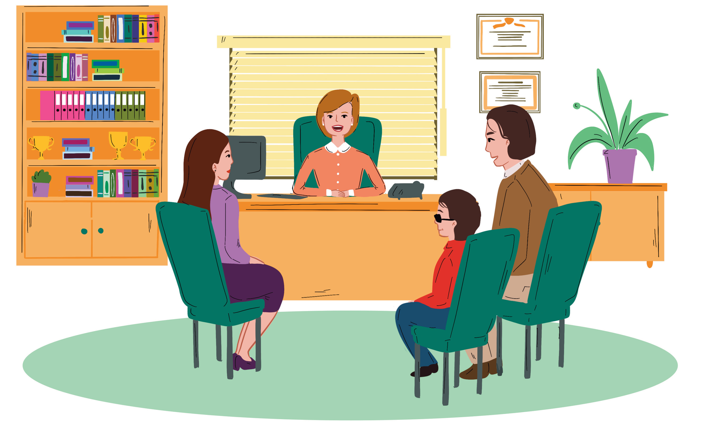

Mirëkuptimi, solidariteti, empatia dhe respekti ndaj të tjerëve
Me mendje dhe zemër për njerëzit
Situata 1.
Besmiri ishte një djalë 10-vjeçar që kishte probleme me shikimin për shkak të një sëmundjeje në sy. Ai nuk mund të shihte mirë dhe rrezikonte të mos vazhdonte shkollën. Një institucion arsimor, sapo dëgjoi rastin e tij, pranoi të punësonte një mësuese të veçantë për Besmirin. U siguruan të gjitha pajisjet ndihmëse, që djaloshi të mos ndihej ndryshe nga moshatarët. Prindërit e Besmirit u shprehën mirënjohje të thellë drejtuesve të shkollës.
